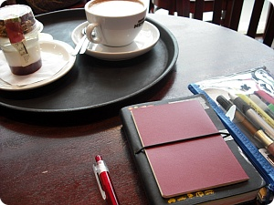
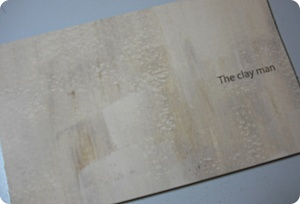
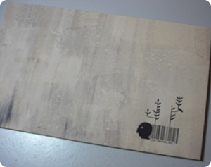
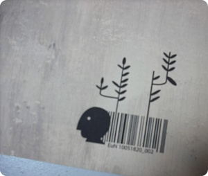
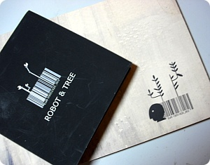
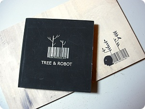
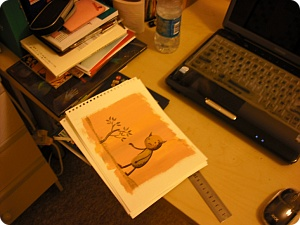
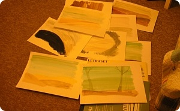
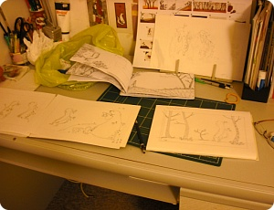

졸작제출완료
언능 제출하고 집에 돌아오고 싶은마음에
일찍갔더니만 제출후 교수한테 붙들려서 약 2시간의 로동후 귀가;;;
그냥 잠들기는 억울해서 우아하게(??) 커피한사발하러
오랜만에 카페네로 댕겨왔음^^;;;
이것저것 앞으로 해야할일(.......크흑;ㅂ;)끄적이고
낙서좀 하다가 돌아왔다
오랜만에 찾아온 평화야 ㅜㅜ
사실 난 작업하면서도 잘건 다 자야하는 성격이라(...;;)
그닥 고생했다고는 잘 생각안하는편인데
(하지만 진상은 실컷 떨었음.....OTL;;)
이번 졸작은 정말 처음 proposal부터 마지막 final piece까지
변화무쌍한 프로젝트였음;;
여전히 처음 내 생각과는 전혀 다른 방향으로 흘러흘러가서
정신차려보니 되돌릴수없는 상황까지 놓여진^^;;
(뭐 프로젝트 진행하다보면 항상 그러긴 하지만;;;)

권당 출력비 24파운드(약4만8천원??) 정도의 무시무시한 녀석;;
올칼라 / 핸드메이드 북이 왜 비싼지 깨달았다.....OTL
the clay man - 흙으로 만들어진 생물체의 이야기인데
스토리는 a4한장에 요약되는 단순하고 어떻게보면
대놓고 하고싶은이야기 다 드러낸 그런책;;;;
(진짜 이 프로젝트 하는 내내 '내가 어쩌다 이걸 그리고있게된게야??'
이 생각이 떠나질 않았음;;;;; 게다가 clay man 캐릭터를 본 북꼬북꼬씨의
'고구마'같아 - 란 소리에 그리는 내내 내머리속에서
씨벌건 고구마들이 이상한 노래를 부르며 춤추는 영상이
떠나질 않았쒀 ㅋㅋㅋㅋㅋㅋㅋ)
죠건 나의 즈질컷팅으로 못쓰게 된 한권인데
사실 제출한것도 바인딩이 아직까지 신경쓰이는중☞☜;;;
그냥 휘릭 넘겨보는 사람은 신경도 안쓸거지만
당사자는 무진장 신경쓰이는 1~2 mm 의 차이;; OTL
본드제본을 했는데(것도 야매로;;) 실제본으로 다시 한번 만들어보고싶다;;
그런데 출력비가 출력비가아아아 ;ㅂ; 헝헝;;;

여전히 집착중인 바코드 ㅋㅋㅋㅋ
그림 다 그리고 표지작업할때
바코드 만드는게 젤 잼써 ;ㅂ; (←;;;;)

죠 번호에도 나름 의미(?)가 있당
EuN 10051820_002
2010년 숫자 반 갈라서 앞뒤로 배치하고
0518(hand-in day)_002(내 두번째 책) 케케케←;;;


요 깜장책이 2학년 파이널이었던 책표지
어째 이 학교들어와서 '나무'란 소재를 꽤나 많이 사용한듯;;
2학년 파이널이야 주제 자체가 root and route였으니까 그렇다쳐도
D&AD제출한것도 pixel tree였고
이번에도 나무랑 관련이 있다^^;;;;
사실 난 자연/작은 동물/애들동화 이런건 영 관심없는데 어쩌다가;;
근데 생각해보면 artificial creature라던가 기계문명과 자연/인간과 기계
같은 주제가 내 취향인듯^^;;;;;

요건 과제하다가 딴짓
엉뚱한걸 그리고있었음^^;;

배경에 텍스쳐좀 넣어보겠다고
아크릴물감 튜브 200 ml짜리 구입해서
엄청나게 칠해대었다

여튼 끗!!!!!
이걸가지구 new blood에 가구
그전에 학교서 전시회하고 뭐 이런거 생각하면
어딘가 숨고싶은마음이 굴뚝같지만;;;;
(하지만 시간을 되돌린다한들 이거이상 나올거 같지도 않아;ㅂ;
크허허 그게 더 슬픔.........OTL;;)
우선 잊어버릴렵니다~
워울~벌써 내가 이학교 졸업할때가 되었다니
시간 넘 빨라요오오오 ㅜㅜ